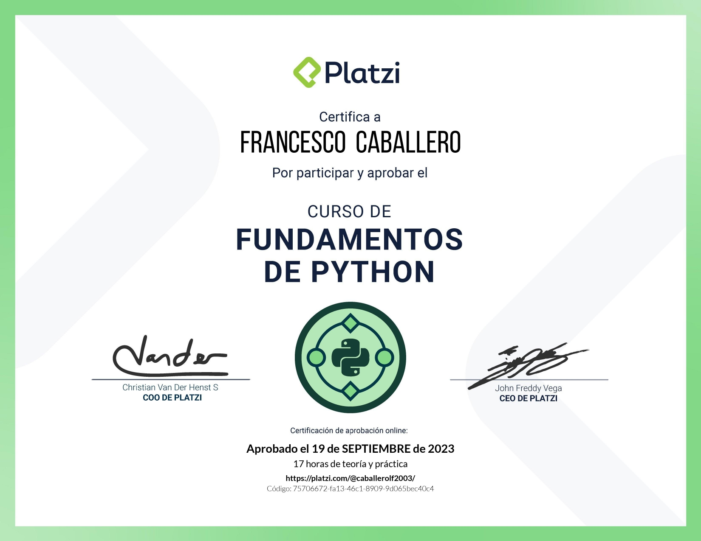
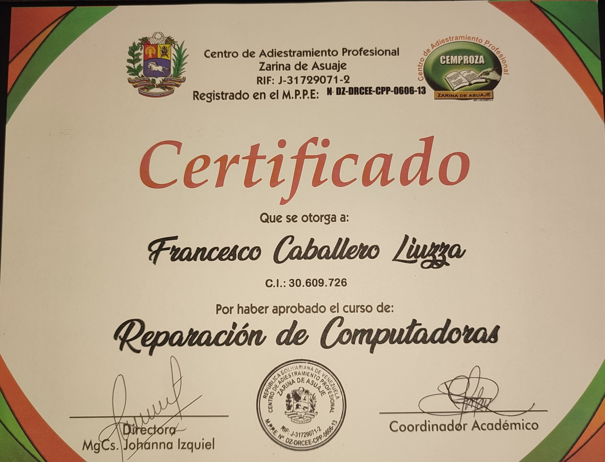

Trabajo para una compañia de transporte , me encargo de la logistica de los vehiculos y de la llevar un informe diario del estado de los vehiculos.
Bachiller en Ciencias U.E.C "La Salle"
Ingienieria Informatica Unellez (6to semestre en curso)
Reparacion de computadoras
Manejo de python
 